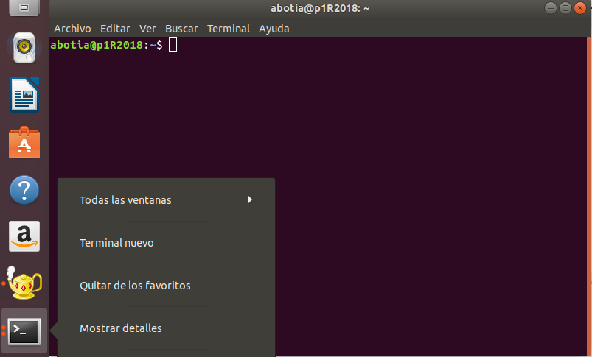
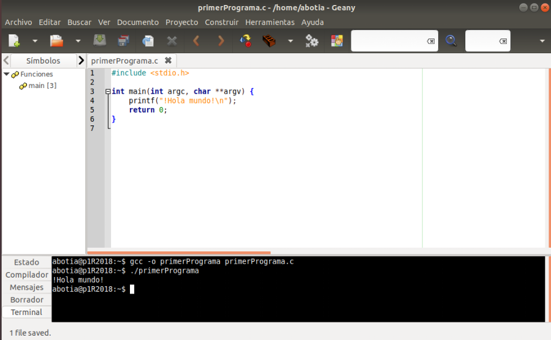

Práctica 0: Entorno Linux y herramientas¶
Objetivos de esta práctica¶
- Conocer y comprender las herramientas necesarias para la realización de un programa
- Aprender a manejar las herramientas y el entorno seleccionado para las prácticas
- Sistema Operativo:
Linux - Editor de textos:
Geany - Compilador:
gcc - Compilar y ejecutar un primer programa
- Depurar los fallos encontrados
Realizar y probar un programa¶
- Para realizar y probar un programa, debemos implementar el programa usando un editor de textos
- Compilar el programa para obtener un ejecutable, usando un compilador
- Ejecutar el programa (ejecutable) desde el sistema operativo
Existen numerosos IDEs, o entornos integrados de desarrollo, que facilitan la tarea del desarrollador, tales como Eclipse, NetBeans, Visual Studio, IntelIiJ, etc
En las prácticas, usaremos Geany como alternativa ligera y de licencia GPL entre el resto de opciones
Sistema operativo Linux¶
- Las prácticas se desarrollarán bajo el Sistema Operativo Linux
-
Es posible usarlo a través de una "máquina virtual", permite emular un Sistema Operativo. Por ejemplo, para lanzar Windows desde Linux o viceversa
-
Es importante conocer los comandos básicos para usar el terminal, así como algunos conceptos base
- Diferencias entre mayúsculas y minúsculas (case sensitive)
- Separador de carpetas en una ruta: / (en lugar de \)
Terminal de Linux¶
- Lanzar la terminal
- Desde el icono “Terminal”
- Combinación de teclas “Ctrl+Alt+T”
- Prompt: símbolo $
- Indica que el terminal esta listo para recibir comandos
- Sistema de ficheros:
- Raiz: /
- Carpeta de usuario: /home/username ó ~

Algunos comandos del terminal de Linux¶
ls¶
- Muestra el contenido del directorio actual (nombres de ficheros y directorios)
- Se puede usar con modificadores, por ejemplo,
ls -lmuestra más detalles
cd¶
-
Para cambiar de directorio:
cd nombreDirectorio -
Si no se indica nombre de directorio, nos movemos al
/homedel usuario
cd .. subir un nivel en la jerarquía de directorios
pwd¶
- Muestra el nombre de la ruta actuaL
mkdir¶
- Para crear directorios nuevos:
mkdir directorio
rm¶
- Para borrar ficheros:
rm prueba.c
rmdir¶
-
Para borrar directorios que estén vacíos:
rmdir directorio -
Si no están vacíos:
rmdir -r directorio
cp¶
- Copia ficheros entre distintos directorios del disco duro:
cp fichero.c practica0/.
mv¶
- Renombra ficheros:
mv fichero.c nuevoNombre.c
clear¶
- Borra la pantalla
man¶
- Muestra ayuda de un comando de linux:
man comando - Para mostrar ayuda de una función del lenguaje C:
man 3 funcionC
find¶
- Buscar ficheros o directorios:
find -name <opciones_busqueda>
sudo¶
- Lanzar un comando como superusuario:
sudo comando
Instalación de programas en Linux¶
- Existen repositorios de aplicaciones similares a "Google Play"
1 | apt install <nombre_aplicacion> |
- Es necesario lanzarla como root
1 2 | sudo apt install geany sudo apt install gcc |
Editor de textos Geany¶
- Gestión de ficheros y edición estándar
- Nuevo, guardar como, buscar, reemplazar
- Editor de textos “enriquecido”
- Palabras clave aparecen con un color resaltado
- Opciones para programar
- Construir → Compilar | Construir | Ejecutar
- Sobre el fichero actual que contiene el programa
- Vista inferior
- Mensajes de salida, errores, vista de terminal, etc.

- Construir → Compilar
- Equivalente al comando
gcc -c programa.c - Genera un programa en código objeto programa.o
- Equivalente al comando
- Construir → Construir
- Equivalente al comando
gcc -o programa programa.c - Compilar y enlazar
- Generará un ejecutable llamado
programa(sin extensión)
- Equivalente al comando
- Construir → Ejecutar
- Equivalente a la ejecución desde consola
./ejecutable
- Equivalente a la ejecución desde consola
Nuestro primer programa¶
- Antes de empezar, crea una carpeta en el sistema para alojar todos los ficheros
1 2 | mkdir practica0 cd practica0 |
- Accede a Moodle donde se encuentran los ficheros necesarios para realizar esta práctica
- Descarga el fichero
firstProgram.cen la carpetapractica0 - Abrirlo desde Geany:
- Compilar y estudiar los ficheros generados
- Construir y estudiar los ficheros generados
- Ejecutar
- Eliminar todos los ficheros salvo el
.coriginal
Compilar, enlazar y ejecutar desde línea de comandos (terminal)¶
-
Abrir de nuevo el terminal y realiza las siguientes acciones:
-
Compilar únicamente:
1
gcc -c firstProgram.c
-
Compilar y enlazar generando ejecutable:
1
gcc -o ejecutable firstProgram.c
-
Ejecutar el fichero generado:
1
./ejectuable
-
Descubriendo errores¶
- Descarga en la carpeta el fichero
firstProgramErrorA.cyfirstProgramErrorB.c - Para cada fichero:
- Abre el fichero desde Geany y estudia las diferencias con respecto al programa original
- Intenta compilar (añadir la opción
-Wallnos ayuda). Fíjate que el Geany utiliza esta opción al compilar (observa la ventana donde muestra el resultado de la compilación). Después, desde línea de comandos compila con la opción-Wally sin dicha opción, y entiende para qué sirve. - Estudia la salida obtenida por el compilador o el programa si la compilación terminó con éxito
- Encuentra el error y corrígelo
Depuración de programas¶
- Dos tipos de errores:
- Sintácticos: los detecta el compilador. Se solucionan fácilmente
- Lógicos: se producen en el diseño del programa o en la implementación sin que suponga un error de sintaxis. MUY DIFÍCILES DE SOLUCIONAR
- Herramienta para la detección de errores:
- Depurador o debugger
gdb - Programa externo. Trabaja con el ejecutable
- Añadimos la opción
-gal compilar congccpara incluir información de depurado en el ejecutable
- Depurador o debugger
Programación 1, Grado de Robótica, curso 2019-20
© Departamento Ciencia de la Computación e Inteligencia Artificial, Universidad de Alicante
Antonio Botía, Cristina Pomares